搭建数据驱动型Android架构
来源:MrPeak技术分享
之前的文章里介绍了如何搭建iOS平台下的数据驱动型架构，iOS和Android系统在平台特性和应用场景下其实有很高的相似性，在不少架构的整体实现思路上基本都一致，只是由于语言特性的差异在实现方式上会有些不同而已。简而言之，内功心法一致，变的只是招式。这里我们用相同的思路来搭建Android系统平台下的DDA（Data Driven Architecture）架构。附GitHub Demo地址。
1.数据驱动
数据驱动是一种思想，数据驱动型编程是一种编程范式。基于数据驱动的编程，基于事件的编程，以及近几年业界关注的响应式编程，本质其实都是观察者模型。数据驱动定义了data和action之间的关系，传统的思维方式是从action开始，一个action到新的action，不同的action里面可能会触发data的修改。数据驱动则是反其道而行之，以data的变化为起点，data的变化触发新的action，action改变data之后再触发另一个action。如果data触发action的逻辑够健壮，编程的时候就只需要更多的去关注data的变化。思考问题的起点不同，效率和产出也不同。
怎么定义数据的变化？
我们在用数据表述业务模型的时候，一般用到两种类型。一是single instance，二是collection type。single instance是单个的model实例。collection type是model实例的集合，array，set，dictionary都是属于集合类。这两者的基础变化离不开CRUD，也就是我们常说的增删改查。把这四种行为定义成事件，再附带上变化的数据部分就可以描述“数据的改变”了。
- single instance。在java当中，并没有语言层面的支持来检查model property的变化。不过property监控说到底还是观察者模式的实现，现在被广泛讨论的RxJava就是其中的典型代表。通过把property变成Observable，观察者作为Subscriber的方式，我们可以在Android上实现single instance的property监控。
- collection type。java当中也没有办法直接表达collection type元素的变化，所以我们需要用RxJava来手动定义元素的CRUD，应用层只需要监听对应的事件即可。
RxJava
RxJava是ReactiveX在JVM上的实现，其核心是体现FRP的编程思想。Functional Programming和Reactive Programming近两年被讨论的很多，各种教程概念介绍也很多了。我个人感觉要完全实践这两种编程范式比较困难，但这两种范式里面所包涵的思想有很多可以借鉴的地方。Functional Programming里面对状态的immutable管理可以避免很多bug的产生，Reactive Programming里面的观察者模式以及Data Stream的概念可以让我们app的架构变得更整洁。不熟悉RxJava概念的朋友可以读下这个列表里所涉及的文档。
监听model property的变化
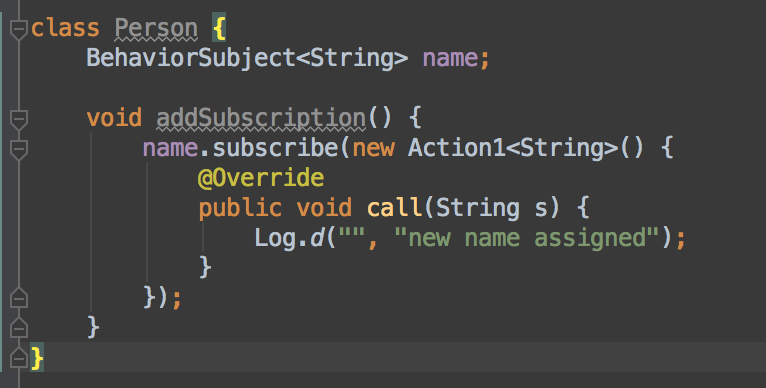
上面代码当中描述的是如何监听person model当中的name property变化。name随时可能会变化，所以是被观察的角色，可以定义为Observable。property的监听方可以针对name添加新的Action。RxJava当中Observable在创建之后就无法emit新的数据了，这也符合Functional Programming的思想，要能持续的产生新的数据，就只能使用Subject（Subject既是被观察者也是订阅者），Subject也分好几种，BehaviorSubject能记住最后一次的最新数据，所以用来做property监控最合适。
基于model property变化所建立的观察者模型有一个重要前提，这个model在内存当中必须只有唯一一份拷贝。这个model的instance一旦被销毁，之前所建立的观察模型也就不成立了，重新生成的model instance也无法恢复之前的业务绑定。所以基于property的观察者模型必须建立持久的内存缓存。
监听model collection的变化
因为model本身一般都会被持久化到database当中，所以model collection本身的变化可以从数据层发出。对于ORM类型数据库，每次model的插入，删除，或者修改都可通过一个事件通知到外部。用RxJava来描述会是这样：
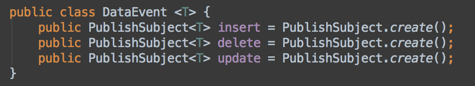
这里我们使用了另一种Subject，PublishSubject和BehaviorSubject不同，不会纪录任何历史数据，订阅者之后收到订阅之后产生的新数据。
2.分层架构
我们将DDA的架构分为三层：
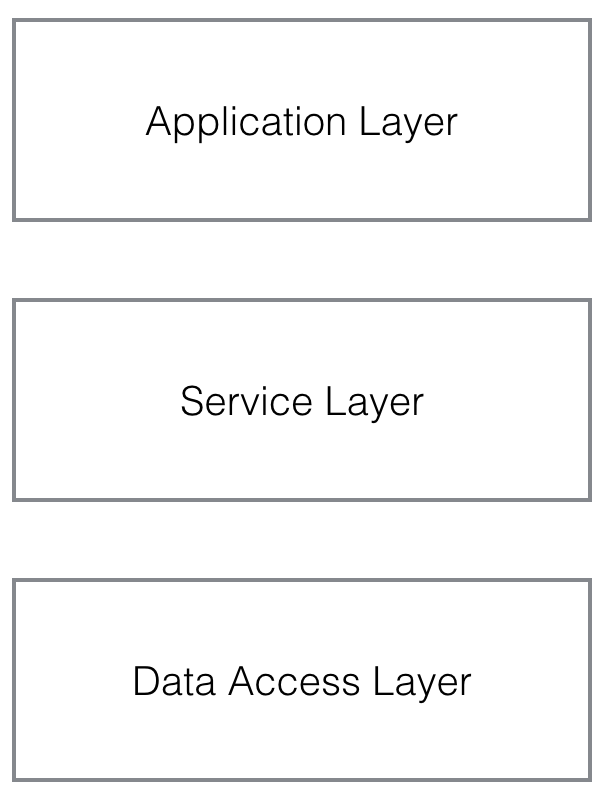
这三层每一层都向下依赖，每一层之间通过面相接口编程的方式产生关联。
Application Layer
这一层主要由我们熟悉的Activity和Fragment组成，工作职责包括采集用户数据和展示UI。采集数据是指数据从Application Layer流向Service Layer，展示UI是指观察Service Layer流入的数据变化并改变UI。可以假设这样一个业务场景来说明Application Layer的工作：用户在SettingActivity里改变自己的用户名。
数据的流出（采集数据）
用户在SettingActivity的输入框里输入新的用户名，产生newName: String，newName需要传输到Server，收到成功回执之后再改变Activity当中的展示。这个完整的流程当中newName就是我们所关心的业务数据，在newName流向Service Layer之前我们可能需要进行校验（名字是否为空或超过了最大长度），这部分的逻辑更贴近界面的工作，且不涉及任何网络和DataBase操作，所以可以放在应用层。如果通过了校验，下一步就是将newName通过请求告诉Server，所有的网络和DataBase操作都发生在Service Layer，所以我们只需要将newName传输到Service Layer，到这一步就完成了数据的流出。
数据的流入（改变UI）
Application Layer将newName输出到Service Layer之后，接下来只需要作为观察者监控user: UserProfile这个model当中name property的变化。user model是一个viewModel，使用上和MVVM当中的ViewModel概念一致，ViewModel定义在应用层，但会通过事件观察者的方式绑定到Service Layer当中的RawModel。ViewModel负责把RawModel当中的数据转化成View所需要的样式，View在完成UI的配置之后就不需要维护其它的业务逻辑了。
Service Layer
Servicec Layer负责所有的网络请求实现，DataBase操作实现，以及一些公用的系统资源使用接口（比如GPS，相册权限，通讯录权限等）。对于Application Layer来说Service Layer就像是一个0ms延迟的Server，所有的服务都通过protocol的方式暴露给Application Layer。Service Layer和Data Access Layer（DAL）使用相同的RawModel定义，RawModel定义在DAL，从sqlite当中读出数据之后就会被马上转化成RawModel。RawModel不要和View进行直接绑定，通过ViewModel中转可以将数据改变的核心逻辑放在同一的地方管理，调试的时候会很有用。上面修改用户名的例子传入的newName，在这一层通过ModifyUserNameRequest通知Server。ModifyUserNameRequest成功回调之后将user model的name property修改为最新值。name一修改Application Layer对应的View立刻会收到数据改变的事件并展示新的name。Service Layer接下来需要把newName保存到数据库当中，涉及到和sqlite的交互。所有和sqlite直接打交道的工作都是交给Data Access Layer来做。
Data Access Layer（DAL）
DAL层对下负责和数据库直接交互，对上通过protocol的方式提供数据操作的接口给Service Layer。数据库我们使用sqlite。DAL层不涉及任何具体的业务逻辑，只提供基础的CRUD接口，这样一旦DAL层稳定下来，项目中后期出现业务bug基本就可以省去在DAL层调试。RawModel也定义在DAL，有些项目会在Service Layer和DAL各自定义自己的model，但每多一层model定义，就多了一次转换和维护的逻辑，对于大部分的项目来说其实没这个必要。DAL除了提供CRUD之外，还需要搭建线程模型，读写要分线程，而且需要同时提供同步异步两套接口。
这样初步进行职责划分后，我们可以得到一个细一点的层次图。
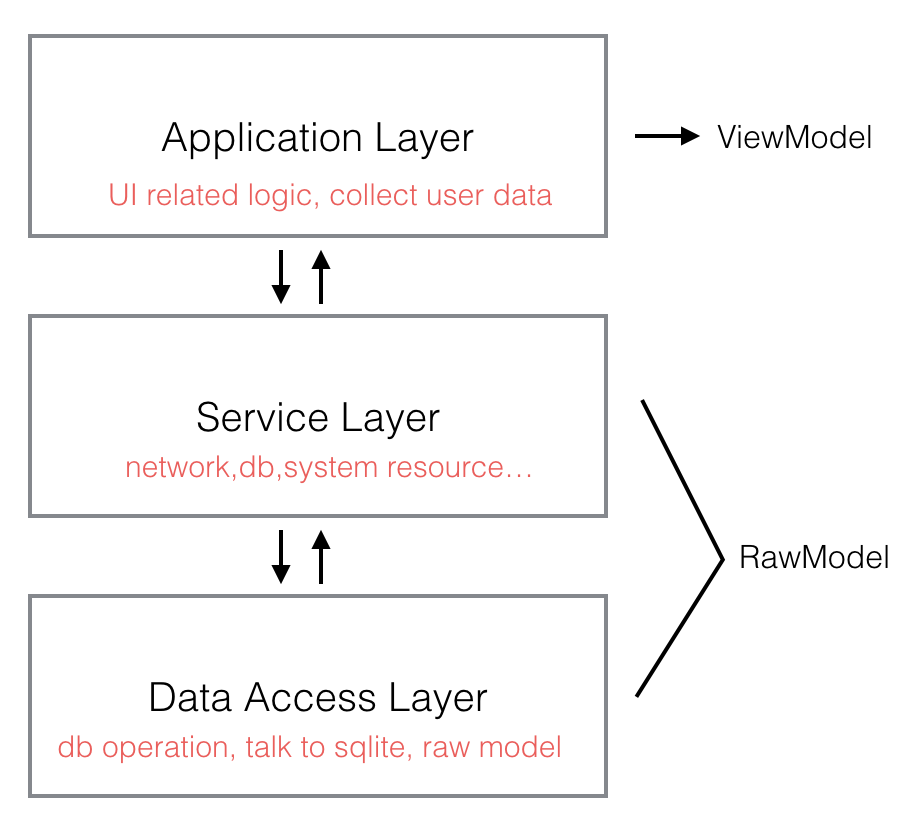
接下来是show the code，我们通过一个具体的demo例子来讨论DDA更多的细节。
3.Trim
Trim是用DDA架构搭建的一个Demo，其目标是将一些不同来源的数据以Feed流的方式展示在同一个界面当中，这样就不用打开n个不同的app去刷新查看了，这些数据可以来自任何有第三方开放平台的产品，比如微博，GitHub等。现阶段Demo已经实现的功能是拉取GitHub账户Repository的信息。这个功能已经包含完整的数据流，可以完整的体现DDA的思路。点击GitHub地址。
Demo的目标是从GitHub上将某个账户所有的Repository拉取下来，形态如下：
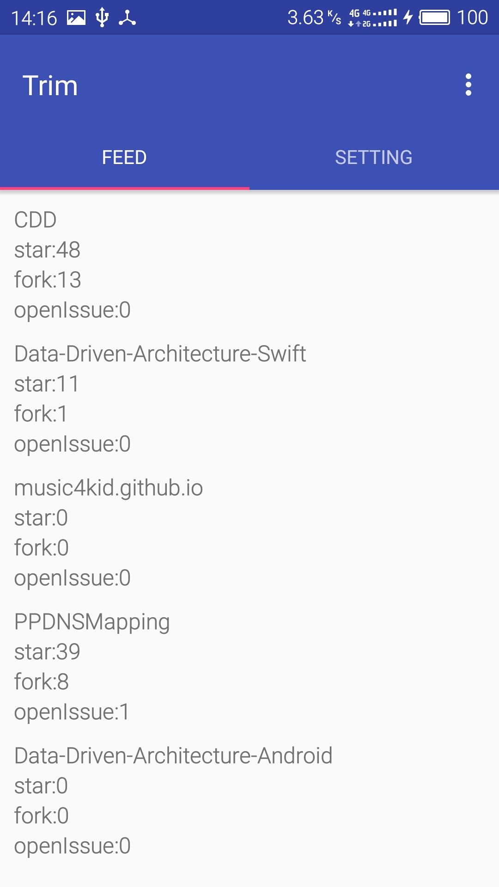
先来看Feed对应的应用层逻辑，工程结构如下：
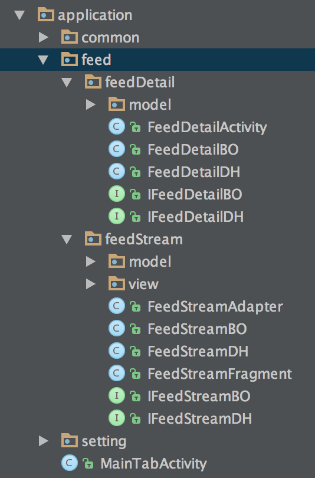
应用层主要是有Activity，Fragment及一些View组成。传统的做法是将布局交给layout xml去做，业务逻辑部分全部放到Activity或者Fragment，这种做法在后期业务增长之后会导致单个类文件的代码膨胀而难以维护。为了解决这个问题，可以使用MVVM，MVP这些设计模式来更合理的细化代码。我们这里采用MVP的方式，布局和UI相关的逻辑都放到Activity和Fragment，Presenter对用这里的BO（BusinessObject），另外我们在独立出一个类DH（Datahandler）来持有业务数据以及提供所有的数据操作接口。对于ListView或者RecyclerView使用Adapter能进一步将代码逻辑分散。
要实现数据驱动的设计，我们需要一种机制能将View的展示直接绑定到model上面。设计思路和MVVM类似，比如真对RecyclerView的每个ViewHolder我们都定义对应的ViewModel，ViewHolder里面的每个UI控件（比如TextView）都和ViewModel当中的property一一绑定。ViewModel还能处理一些业务数据的转换，以及事件的传递等。
代码细化分散之后要面对的一个问题是各个类文件之间的通信。为了降低和控制耦合度，对于BO，DH我们都定义对应的interface，各个类（比如ViewHolder）要将事件传递到BO，都需要通过对应的interface去访问。Android上可以通过依赖注入(比如roboguice)的方式来实现这种解耦。
Application Layer
Repository Cell里每个UI控件（4个TextView）与ViewModel property的绑定代码如下：
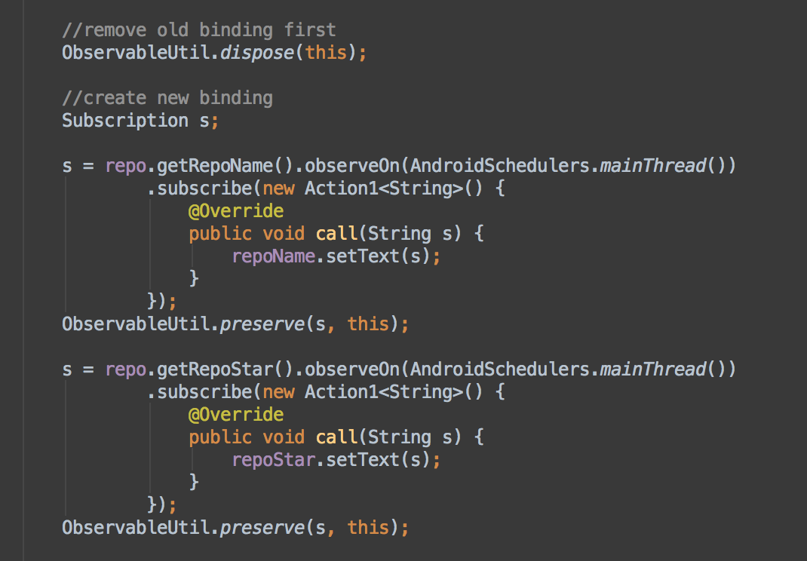
repoName（TextView）的text直接和repo（ViewModel）的repoName（BehaviorSubject）绑定。考虑到ViewHolder的复用，需要在每次绑定的时候处理移除和重新添加的逻辑。
ViewModel当中的property会进一步绑定到RawModel：
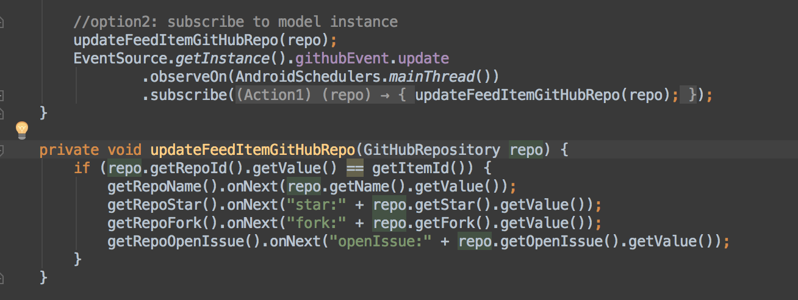
这里我们监听了来自data access layer的GitHubRepository update事件。每次update都会更新ViewModel当中的property，上面与之绑定的TextView的text也能立即得到更新。
监听GitHubRepository的update事件属于监听model collection的变化，上面我们还提到过可以直接监听model property的变化，这种监听方式要求model在内存缓存当中有唯一一份instance，绑定代码如下：
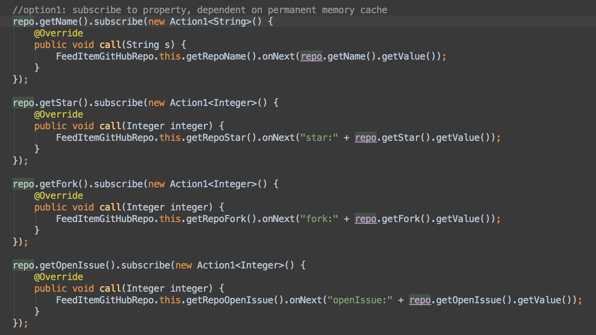
对于每个控件来说，ViewModel当中property的值都可以直接拿来使用，不需要做任何转换，转换的逻辑发生在ViewModel当中。绑定的代码虽然很简单，但observeOn里面其实需要处理更多的场景。
- 绑定到新的property的时候，需要把旧的绑定解除（view重用的时候会有旧的绑定存在）。
- 当控件被释放的时候，需要把绑定解除。
- 绑定发生的时候需要针对初始值触发一次。
- 绑定的添加和移除是线程安全的。
FeedItemGitHubRepo作为ViewModel必须由RawModel来初始化，FeedItemGitHubRepo当中的每个property都需要一一对应绑定到RawModel的property当中，observeOn提供一个Action1的匿名类回调来添加额外的业务逻辑，可以做property值与类型的转换。这样每次Service Layer改变RawModel的任何property的时候，FeedItemGitHubRepo就能立刻收到事件并改变自身对应property的值，之后configCellWithItem当中的绑定也会被触发，UILabel等控件的值也随之更新。完成一个应用层的数据驱动链路。bindProperty添加的绑定与model本身的生命周期关联即可，因为不存在model被复用的情况。
Service Layer
应用层的数据绑定确立以后，接下来是处理Service Layer的数据逻辑。RawModel的改变都发生在这一层，Application Layer不应该直接处理RawModel，所有的数据处理逻辑都应该通过Service Layer暴露接口来实现。Service Layer的结构如下：
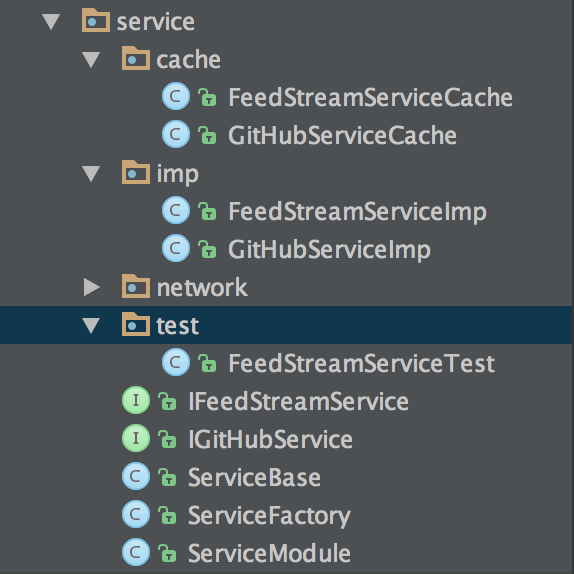
Service Layer的组织方式按照面向接口的方式，ServiceFactory是工厂类提供各种Service的实例。每种Service都有对应的interface定义其可供Application Layer使用的接口。GitHubServiceImp存放真正的实现。采用面向接口的方式除了和应用层解耦之外，还有另外两个好处：
Model Cache
每个Service除了有Imp实现类之外，还可以定义一个Cache子类。GitHubServiceImp就对应了一个GitHubServiceCache
public class GitHubServiceCache extends GitHubServiceImp {
private HashMap<Long, GitHubRepository> cachedRepoMap = new HashMap<>();
}
model的查询会频繁的发生在应用层，如果每次都从db里去获取，disk io带来的性能损耗必然会影响应用层的整体表现。所以对于业务频次高的模块需要建立对应的Model Cache。这个Cache对业务逻辑来说是透明的。比如加载所有repository的接口：
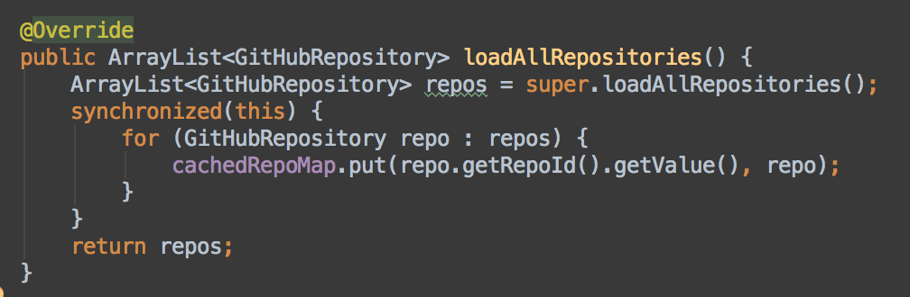
只要调用super.loadRepositories()就完成Imp当中的业务实现，cache的发生完全独立于业务逻辑。当然我们需要把ServiceFactory当中的实例替换成Cache对应的实例：
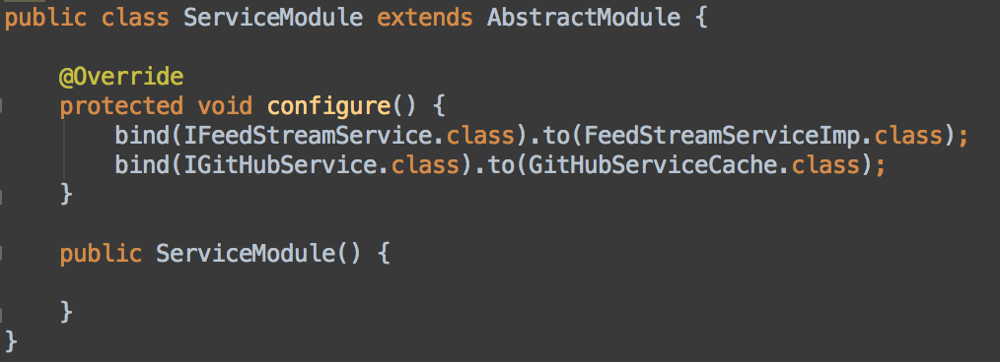
这里我们再次使用guice来做interface和implementation的绑定，可以看到IGitHubService绑定到了GitHubServiceCache。
Unit Test
和Model Cache的添加方式类似，我们还可以针对每个Service的接口添加Unit Test。对于GitHubServiceImp来说，我们只需要添加一个GitHubServiceTest子类，再把需要测试的接口override并添加具体的测试逻辑即可。
比如我们想真对上面loadRepositories方法做一些测试，可以做如下实现：
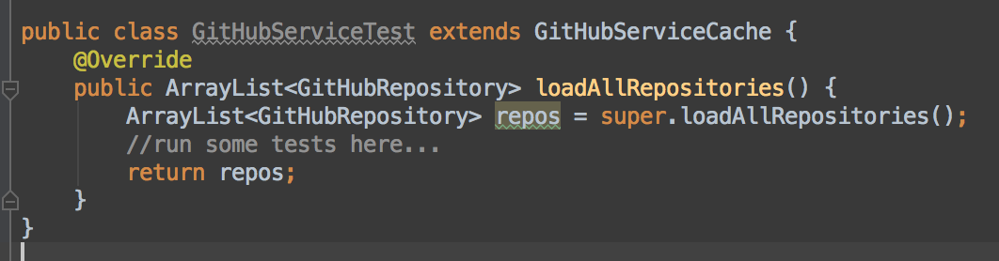
同样测试的代码逻辑完全独立于具体的业务逻辑，和Cache的逻辑也没有任何关联。通过这种方式我们可以对每个关键的api都添加对应的Unit Test逻辑。当然ServiceFactory当中的实例也需要做替换：
bind(IGitHubService.class).to(GitHubServiceTest.class);
所有的这些对Application Layer来说都是不可见，透明的。Application Layer使用的只是protocol当中定义的接口，对于具体是哪个Service的实例并不关心。
Unique Model Instance
如果要做到ViewModel和RawModel之间property的一一绑定，关键的一点是要保证RawModel在Service Layer当中的唯一性。也就是说每个业务场景对应的RawModel在Service Layer只有一个实例对象。这样Application Layer不同的业务模块就能绑定到同一个model实例，model某个property变化的时候，各个业务模块都能收到相同的事件通知和数据。为Service实例添加Model Cache可以很好的保证Unique Model Instance。
如果RawModel没有存在Service Layer，ViewModel和RawModel之间的绑定就不成立，那么应用层需要通过另一种方式来监听数据的改变。
Data Access Layer（DAL）
DAL是与database（我们使用sqlite）直接打交道的部分。这一层是数据变化最可靠的源头，因为所有的数据只有持久化到database之后才算真正安全。如果无法建立ViewModel与RawModel的绑定，那么应用层就需要一种方式可以监听database数据的变化。依照CRUD原则，我们可以将这种变化定义为table row的增删改查，每一种row数据的变化都会触发一种对应事件。所以我们只需要定义一种数据结构同时描述table name和row change event即可。
DAL工程结构如下：
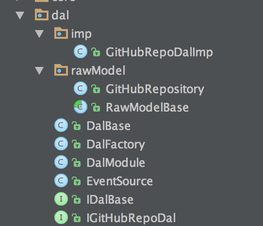
EventSource当中定义我们上面所说的collection数据变化，看下具体代码：
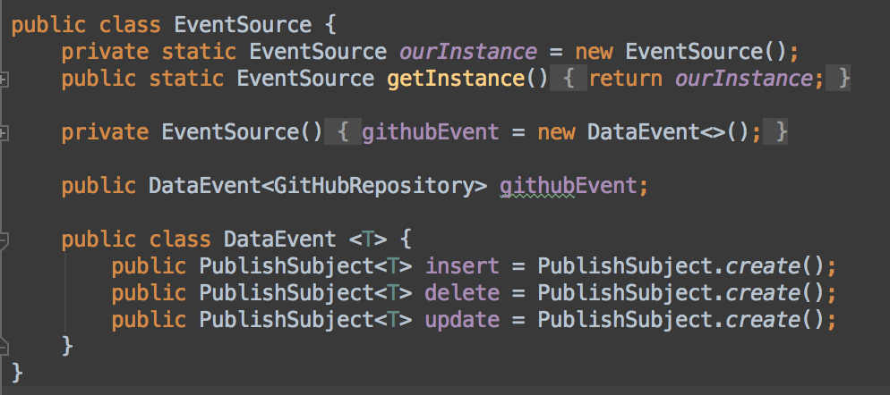
每个table对应一个DataEvent实例，每个DataEvent实例包含row change的事件，insert，delete，update对应增删改。
所以当我们从GitHub Server拉取到新的Repository的时候只需要对应触发insert事件，比如我们在DAL层保存新的Repository逻辑如下：
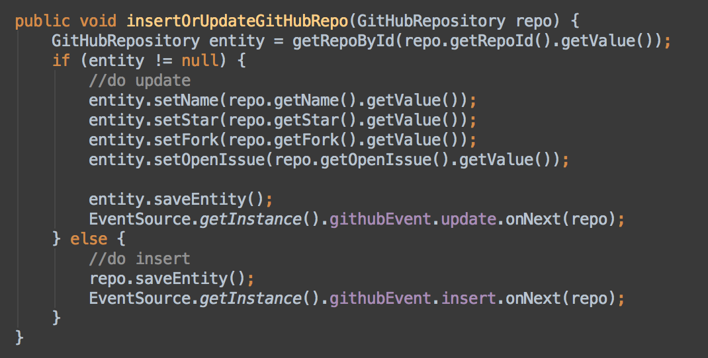
保存的时候会触发insert或者update事件。
应用层如果要监听新的插入数据，只需要注册绑定：

这样所有数据的变化都可以被应用层监听到。
这里DataEvent虽然对应用层可见，但这种model和事件的跨层是可以接受的，这种方式可以省去通过Service层中转的麻烦，而且DataEvent并不包含具体的业务逻辑，只描述数据最基础的变化，不会有业务依赖耦合带来的问题。
到这里可以看出Application Layer被驱动的方式有两种：
- 被Service Layer的RawModel property变化驱动，这种驱动方式需要建立Model Cache，保证应用层的ViewModel都有一份对应的RawModel Cache。
- 被DAL的DataEvent驱动，这种驱动方式更通用，不需要建立Cache，也可以被Service Layer监听。 一般场景下我们使用第二种数据驱动方式，在对性能要求较高的场景我们也可以使用第一种property binding的方式。
经过上面更细节的讨论后，我们总结下新的结构图：
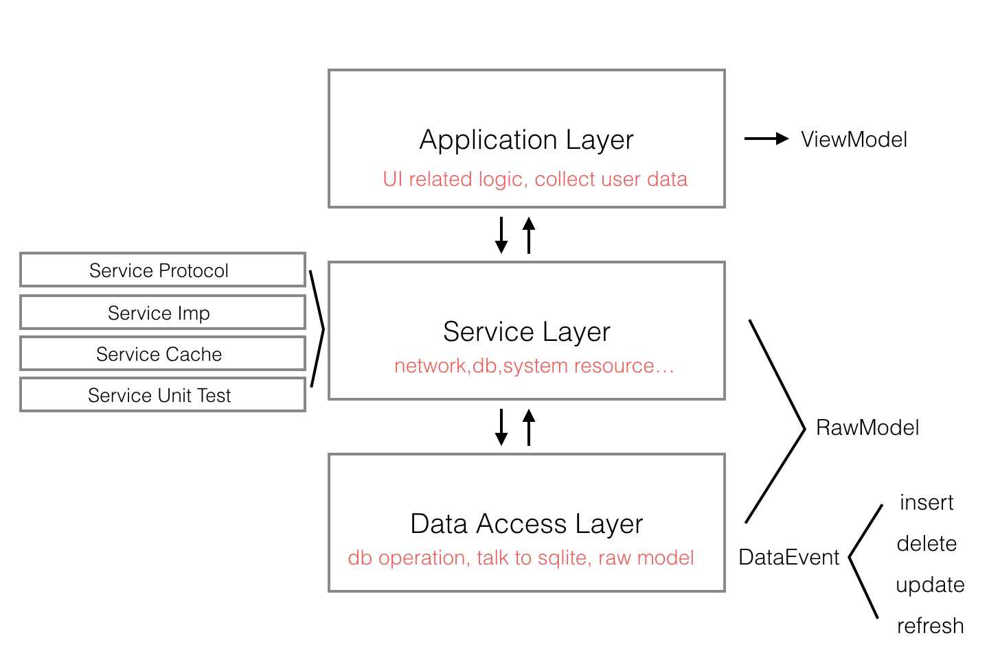
更多的细节请查看代码。
微信公众号：MrPeakTech，少量原创技术文章。